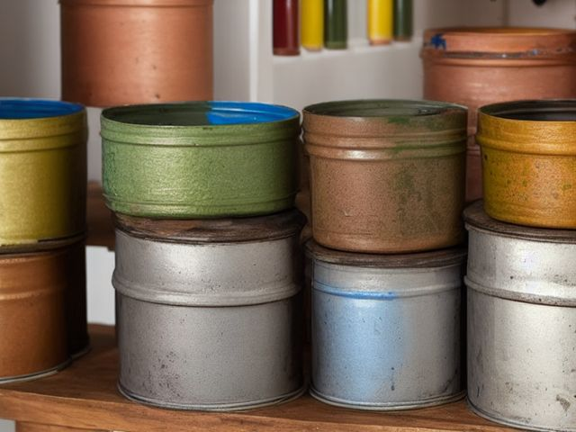

Workshop micro zone
The Finishing and Chemical Zone
Store paint, glue, stain, and solvent so they stay usable and so they never start a fire.
One session: 45-75 min. most of it in Sort and Safety, with a trip to hazardous waste disposal on the same day

What done looks like
Every product in its original labeled container inside a closed metal cabinet, each lid dated in marker, water based paint on one shelf and solvents and thinners on another. Oily rags in a self-closing metal can with the lid down, a drip tray under the solvent shelf, and no aerosol standing on a sunny sill or near a pilot light.
Check these before you start
- Burn or fireOil finish rags balled up in a bin liner or draped over the bench, and solvent stored within reach of a water heater flame.
- Poison, choke, or strangleThinner or turpentine decanted into an unlabeled drink bottle, and spraying or brushing solvent based finish in a closed shop with the door shut.
What to have on hand before you start
These are types of thing, not brands. If you already own something that does the job, that is the right one to use. Each says which pass needs it and what to watch out for.
- Mineral spirits or brush cleaner
Clean brushes and finishing tools through to the ferrule, in the Shine pass.
Flammable: store in the metal cabinet away from any pilot or heater, ventilate while using, and dispose of via household hazardous waste, never a drain. - Self-closing oily rag can
Contain oil, stain, and solvent rags in a lidded metal can that shuts on its own weight, in the Safety and Sustain passes.
Oil-finish rags generate their own heat as they cure and can ignite with nothing touching them; the lid must fall shut on its own weight. - Impact-rated safety glasses
Protect eyes during garage and workshop resets, in the Safety pass.
Use rated protection appropriate to task. - Color-coded microfiber cloth set ×12
Wipe, dust, and dry surfaces, in the Shine pass.
Wash by use color; avoid fabric softener. - Neutral pH multi-surface cleaner
Routine cleaning of sealed surfaces, in the Shine and Sustain passes.
Verify surface compatibility; lock around children and pets. - Compact vacuum with attachments
Remove dust, crumbs, and debris, in the Shine pass.
Use appropriate attachment. - Keep, Relocate, Donate, Recycle, Trash container set ×5
Support rapid item routing during Sort, in the Sort pass.
Do not block exits. - Portable cleaning caddy
Transport and contain cleaning inputs, in the Straighten, Shine and Sustain passes.
Secure chemicals from children and pets. - Portable label maker
Create durable standardized labels, in the Standardize and Sustain passes.
Follow surface and adhesive guidance. - Removable write-on labels
Create temporary or adjustable visual controls, in the Standardize pass.
Test on delicate finishes.
Only if your paint and chemical storage has one: 6 more
Not every paint and chemical storage needs these. Each one is here because some do, and the reason is next to it.
- Drawer Safety Latch
Restrict access to chemicals, medicines, and sharp tools, in the Safety pass.
Install and use according to product instructions. - Reusable or disposable nitrile gloves
Protect hands during cleaning and sorting, in the Shine and Safety passes.
Use per product label. - PPE Wall Station
Make protective equipment visible and ready, in the Straighten, Standardize and Sustain passes.
Do not overload; anchor wall-mounted or tall systems where required. - Anti-tip anchors and hardware
Secure tall furniture and shelving, in the Safety pass.
Install to manufacturer and wall-type requirements. - Water-resistant permanent labels
Mark stable standards and long-term storage, in the Standardize and Sustain passes.
Avoid irreplaceable surfaces. - Shelf Location Label Set
Standardize location naming, in the Standardize and Sustain passes.
Install and use according to product instructions.
The six passes, in order
Work them in this order. Sorting after you have arranged things means arranging things you were about to remove.
Sort
Decide what stays. Everything else leaves the zone now.
Open and judge each container. Paint with a thick skin or a sour smell is finished, wood glue that has gone stringy or granular will not hold a joint, and cured polyurethane in a half bottle is a rock. Take all of it to household hazardous waste, never the bin, never the drain.
Straighten
Give what stays a home, placed where the hand actually reaches.
Separate what should never meet: solvents and thinners on their own shelf, water based finishes on another, and hardeners kept away from the resins they cure. Keep the stir sticks and the brushes for each family with them.
Shine
Clean it, and use the cleaning to inspect what you cannot see when it is full.
Wipe the rim of every can before the lid goes back on, because a rim full of dried finish is why the can skins over. Clean brushes right through to the ferrule and wipe down the spill tray.
Surface by surface, all 6 of them, with what to use on each.
Safety
Make the zone safe for everybody who uses it, including the shortest person.
A rag soaked in oil finish generates its own heat as it cures and can ignite with nothing touching it, so it goes in a lidded metal can or gets spread flat outdoors to dry. Keep flammable liquids away from any pilot light or heater, and ventilate before you spray, not after.
Standardize
Write down the best way you know today, so it survives you forgetting.
Date every container with a marker the day it arrives, and write the shelf layout on the inside of the cabinet door so the solvents and the water based finishes stay apart even when you are putting things away in a hurry.
Sustain
Attach the reset to something that already happens, so it keeps itself.
When you wash out a brush at the end of a finishing job, that is when the can gets its date checked and the rag goes into the metal can.
The wall of half-used paint
You are storing a row of part cans against the possibility of a touch-up, including colours from a wall you painted over and a house you no longer live in. Almost none of it will still brush out matching in two years anyway. So keep only colours currently on a surface in this house, and keep them properly: one small sealed jar of each, labeled with the room and the finish, not the original half-empty tin sitting open to the air. Everything else goes to hazardous waste on the same day you sort it, because a box of condemned paint sitting by the door for a month is just the same problem, relocated.
Cleaning it properly, surface by surface
Clean this zone can by can. Wipe every rim before the lid goes back so the can does not skin over, clean your brushes right through to the ferrule, and wipe down the spill tray.
Work down, not across. Whatever comes off a high surface lands on the one below it, so cleaning the floor first means cleaning it twice.
Carry these in with you. Neutral pH multi-surface cleaner; Portable cleaning caddy; Compact vacuum with attachments; Color-coded microfiber cloth set; Mineral spirits or matching brush cleaner; Clean shop rags.
- The top of the metal cabinet and its upper shelf
Dust and wipe the top of the cabinet first, then the upper shelf where the water based paints stand. - The cans, tins, and containers
Wipe the rim and the shoulder of every can before the lid goes back on, because a rim packed with dried finish is why a lid stops sealing and the can skins over. - The solvent shelf and the drip tray beneath it
Wipe the solvent shelf, then lift the drip tray out and clean it, so the next drip lands on bare metal you can see rather than into a crust of old spills. - Brushes and application tools
Clean each brush right through to the ferrule with the matching thinner or brush cleaner, work it dry, and hang it bristle down. - The oily rag can
Wipe the outside of the rag can and check that the self-closing lid falls shut on its own weight. - The cabinet floor and the shop floor beneath it
Vacuum and wipe the cabinet floor, then the strip of floor in front, watching for the sheen of a slow seep.
Inspect as you clean. Cleaning is the only time you see the zone empty, so use it.
- A can rim skinned over, a lid rusting into the seam, or a container bulging or swollen out of shape.
- A ring or a stain on the shelf under the solvents that says something is weeping through a seam or a tired gasket.
- An aerosol gone warm or bulging, or a label rubbed illegible so you can no longer tell water based from solvent.
- Liquid pooled and standing in the drip tray, and the smell of solvent in the air with every lid supposedly shut.
The standard that keeps it fixed
Original containers, dated lids, incompatibles on separate shelves, and rags in a lidded metal can.
Reset trigger. When the brush goes under the tap, the rag goes in the can and the lid goes down.
The rest of the workshop, in working order
Each of these is one session on its own. Finish this zone before you open the next.
- The Main Workbench
- The Power Tool Storage
- The Fastener and Hardware Zone
- The Material Rack
- The Finishing and Chemical Zone, you are here
- The Safety and PPE Station
The Workshop in full, with what each of the 6 zones is for
Related reading
- What is 6S?
- This zone's safety pass, in full
- Is one spot in this zone always the one you skip?
- Why this zone gets messy again
- Decluttering vs. organizing
- Before you buy storage for this zone
- Still does not fit, even after the honest count?
- Does something in this zone actually get used somewhere else?
- Stuck on one item in this zone?
- Written the standard, but nobody else follows it?
- Does everyone in the house agree what "done" looks like here?
- Does more than one person use this zone?
- Found a duplicate of something in this zone?
- Why the standard above names one home per category
- Is the everyday item in this zone actually the easy one to reach?
- Not sure whether to keep something in this zone?
- Does this zone keep running out of something?
- Started this zone and stalled partway through?
- Have you stopped noticing the clutter in this zone?
When you want it off the screen
Carry The Finishing and Chemical Zone into the room
The method above is complete and free. The Whole House Print Pack puts The Finishing and Chemical Zone and the other 113 micro zones on 684 printable cards, so the steps you just read are not stuck behind a phone screen while your hands are full.
The Print Pack, 19 dollarsJust this zone, 4 dollarsOr draw a card free
The Finishing and Chemical Zone on its own is 4 dollars for 6 cards. All 114 micro zones is 19 dollars for 684. The whole house is the better buy; the single zone is here so you can take only what you are working on.
If The Finishing and Chemical Zone keeps fighting back, the real problem usually sits somewhere else in the room. A one hour virtual consult is 250 dollars: we find the function, the friction and the root cause together, and you keep a written standard for the space. See what a consult covers.